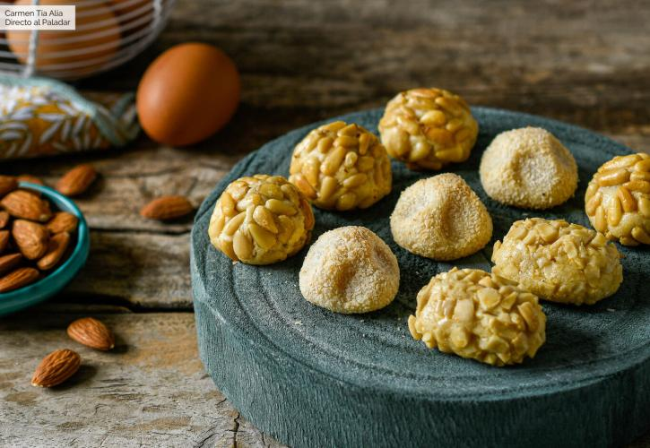
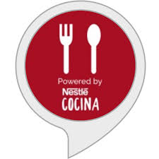

POSTRES
CARNES Y AVES
PESCADOS
VERDURAS Y
LEGUMBRES
Cómo hacer panellets, receta tradicional de Todos los Santos

Ingredientes
Para 22 unidades
200g
Almendra cruda.
3
cucharadas de aceite de coco.
15
Dátiles
50g
Piñones (para rebozar)
50g
Coco rallado (para rebozar)
50g
Almendra cruda picada (para rebozar)
Cómo hacer panellets
Mezclar todos los ingredientes formando una pasta y haremos bolitas con la masa que después rebozaremos. Colocamos los panellets en una bandeja de horno cubierta con papel vegetal y los cocemos en el horno, precalentado a 180 ºC durante 12-14 minutos o hasta que estén ligeramente dorados
